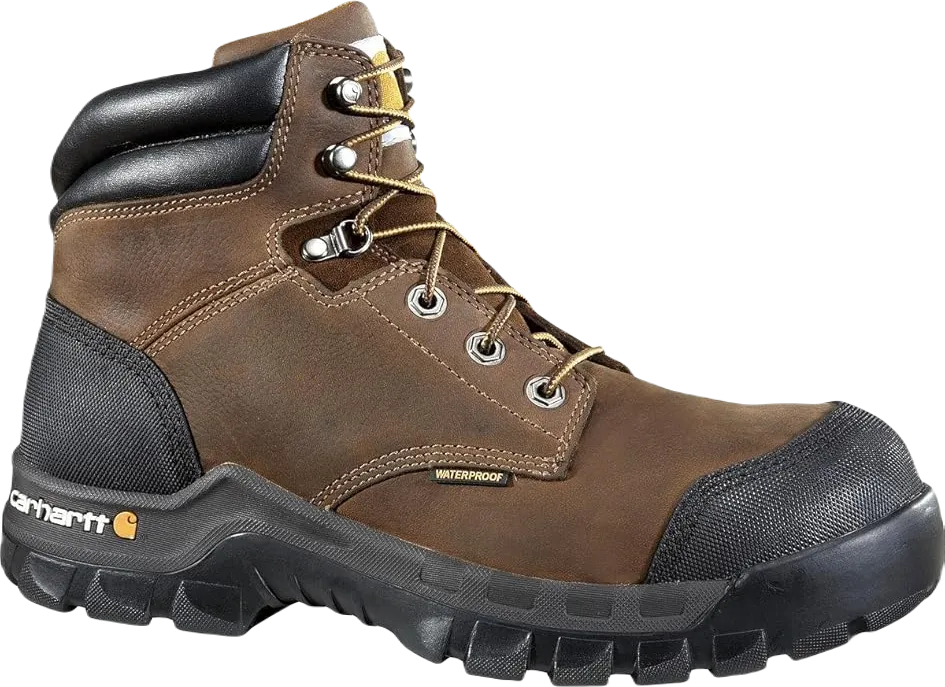

Best Work Boots for Delivery Drivers
When discussing shoes, there are certain types that not only provide comfort but also offer protective features. We understand how beneficial quality footwear can be, enhancing both comfort and overall well-being. Many people prefer shoes that are flexible and supportive, ensuring they remain in good condition throughout their daily activities.
Shoes are essential for everyone, catering to a variety of needs and lifestyles. They play a crucial role in maintaining health and comfort, making them a vital accessory for all kinds of activities.
-
#1
Carhartt rugged flex
Shoes are an excellent choice for all types of working individuals seeking footwear that offers additional care and protection. These shoes are designed to ensure comfort while providing the necessary support needed throughout the workday.
Many people appreciate wearing shoes that not only meet their functional needs but also simplify maintenance and cleaning. This convenience is crucial for individuals who require reliable footwear to perform their tasks efficiently.
Shoes offer enhanced care and support, making them suitable for extended wear. With this in mind, we have designed a range of hunting boots that provide various benefits, including durability and style, ensuring you look good while working effectively. -
#2
Timberland pro men’s pit boss
.webp)
Shoes provide an extra layer of protection and comfort, designed to shield your feet from harmful elements. Equipped with various features, these shoes ensure that you can perform your tasks without facing issues, particularly during deliveries or other challenging situations.
These shoes are effective in offering security and support, making them highly recommended for anyone needing reliable footwear. Their protective qualities help ensure that everything runs smoothly, allowing you to focus on your work without distractions.
With their high-quality construction, these shoes deliver significant benefits, improving your overall experience. The thoughtful design and impact-absorbing features contribute to better performance, making them a valuable addition to your wardrobe. -
#3
Caterpillar men’s second shift
.webp)
Shoes offer essential protection by keeping harmful elements at bay. Their overall design ensures comfort, making them suitable for various tasks. With their ability to provide additional security and support, these shoes prove to be highly effective for any situation.
The versatility of shoes enhances their functionality, allowing them to excel in providing both comfort and protection. Their lightweight construction further contributes to a better experience, enabling you to move freely and efficiently.
The quality of shoes plays a crucial role in delivering excellent results. With features designed for enhanced comfort, you can rely on them to meet your needs while ensuring you feel great throughout your activities. -
#4
Under armour stellar tac
.webp)
Shoes are essential for ensuring that everything runs smoothly while you wear them. They provide a high level of security and protection, keeping your feet safe from harmful elements and ensuring that you feel comfortable throughout your activities.
With a wide range of sizes and options available, shoes are designed to meet various needs. The quality of the soles enhances performance on different surfaces, making sure that you maintain stability and grip no matter the conditions.
The inner sole's softness adds to your comfort, effectively keeping unpleasant elements at bay. Many shoes also come equipped with features such as waterproof resistance and shock absorption, ensuring a better experience. They offer the extra care you need, while their easy-to-clean materials help maintain their quality over time. -
#5
Keen utility Lansing
.webp)
Shoes offer remarkable durability and come equipped with various features that enhance their functionality. They provide essential security and support, ensuring that your activities proceed smoothly. The durability and flexibility of these shoes make them a reliable choice for anyone seeking comfort and stability.
With a vast selection of colors, designs, and materials available, there are numerous options to suit different preferences and needs. This diversity allows you to find shoes that not only look good but also perform well in various conditions.
Some shoes are specifically designed to be waterproof and can effectively keep harmful elements at bay. People have a wide range of choices, and the right footwear can provide the stability needed to ensure a good day. These shoes offer added protection and comfort, making them an excellent investment for anyone seeking reliable footwear. -
#6
Wolverine men’s marauder boots
.webp)
These shoes offer enhanced features and capabilities that ensure everything functions smoothly while effectively keeping unwanted elements at bay. They are designed to provide not only protection but also comfort, making your experience more enjoyable. It’s clear that many people appreciate footwear that prioritizes their needs and contributes positively to their overall well-being.
These shoes excel in both walking and working on challenging surfaces, offering the motivation and support you need. They provide essential care and protection, helping to keep your feet safe from perspiration and other harmful factors. By effectively shielding against discomfort, they help you stay focused and active throughout the day.
Step Aerobics shoes, in particular, are beneficial for various activities and come in a variety of colors and designs, ensuring that there’s something for everyone. Overall, these shoes are crafted to enhance your experience and ensure that you feel good while engaging in your daily activities. -
#7
Ecco men’s track II high cireTex
Shoes provide essential care and support, offering features that enhance your overall experience. They are designed to improve comfort and functionality while ensuring durability and quality. With these shoes, you can enjoy a better perspective on your activities, making them a valuable addition to your footwear collection.
These shoes are crafted to offer superior protection, ensuring that you remain safe and comfortable in various environments. Their design effectively keeps harmful elements at bay, allowing you to focus on your tasks without concern. The thoughtful construction of these shoes makes them an excellent choice for anyone looking to enhance their daily routine.
Additionally, these shoes come in a wide range of colors and designs, catering to diverse tastes and preferences. This variety not only adds style to your wardrobe but also ensures that you can find the perfect pair to suit your needs. Overall, these shoes are designed to make your life easier and more enjoyable while providing the quality and protection you deserve. -
#8
Keen utility men’s Detroit
Shoes are designed to protect your feet by keeping harmful elements at bay. They offer essential features that provide extra protection, ensuring that your feet are safeguarded from falling objects. With various enhancements, these shoes aim to improve comfort and performance, making them a reliable choice for any activity.
Wearing the right shoes can significantly impact your day, preventing discomfort and ensuring you stay active without worry. These shoes are crafted to ensure you have a good day, supporting your every step and keeping you comfortable throughout your activities.
The Timberland Whiteledge Boot exemplifies footwear that combines safety and style. These boots are designed to deliver optimal results and accessibility, ensuring that you have the best experience in all situations. Their quality construction and thoughtful features make them an excellent choice for anyone seeking durable and reliable footwear.